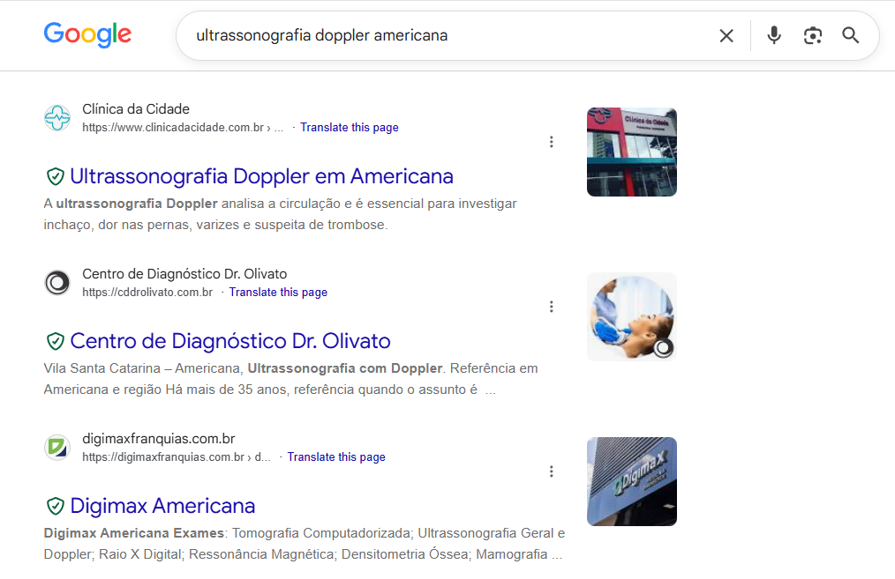

Top 1 ultrassonografia doppler americana
Google
ultrassonografia doppler americana
#1 · Clínica da Cidade
C
Ultrassonografia Doppler em Americana
Clínica da Cidade
https://www.clinicadacidade.com.br › Centros
Exame de imagem que avalia o fluxo sanguíneo em veias e artérias. Auxilia no diagnóstico de trombose, varizes e alterações circulatórias, com laudo rápido e ...
Clínica da Cidade
C
Centro de Diagnóstico Dr. Olivato
cddrolivato.com.br
https://cddrolivato.com.br
Ultrassonografia com Doppler. Combinando as ondas sonoras de alta frequência ... Referência em Americana e região. Há mais de 35 anos, o Olivato tem ...
Concorrente
M
Ecografia Ultrassom em Americana - SP
medprev.online
https://medprev.online › Exames
Agendar Ecografia Ultrassom em Americana - SP por Valores Acessíveis, sem taxa de adesão e sem mensalidade na MEDPREV.
Concorrente
D
Dr. Auro Nobre opiniões - Radiologista, Especialista em ...
doctoralia.com.br
https://www.doctoralia.com.br › Radiologista › Americana
Dr. Auro Nobre, Radiologista, Especialista em Diagnóstico por imagem em Americana ... Ultrassonografia obstetrica sem doppler. R$ 290. Detalhes. Ultrassonografia ...
Concorrente
A
Art Med - Diagnóstico por Imagem
artmedexames.com.br
https://artmedexames.com.br
Ultrassom Doppler Vascular. Técnica do ultrassom que avalia o fluxo sanguíneo nas artérias e veias, além de diagnosticar alterações vasculares podem ...
Concorrente
Print real do Google
